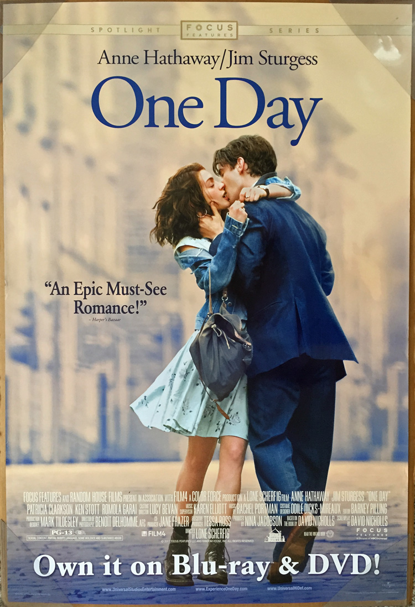
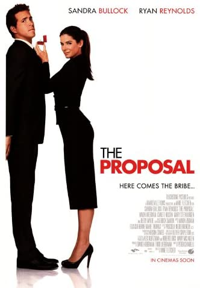
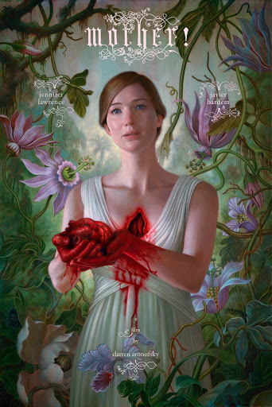
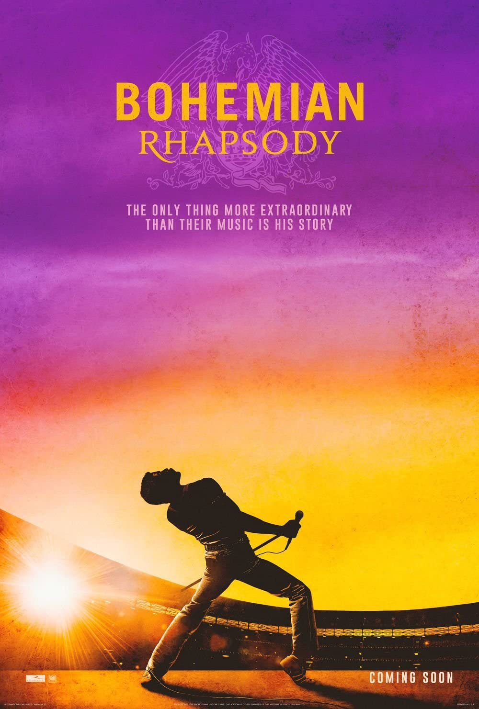
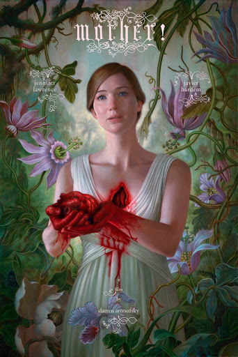
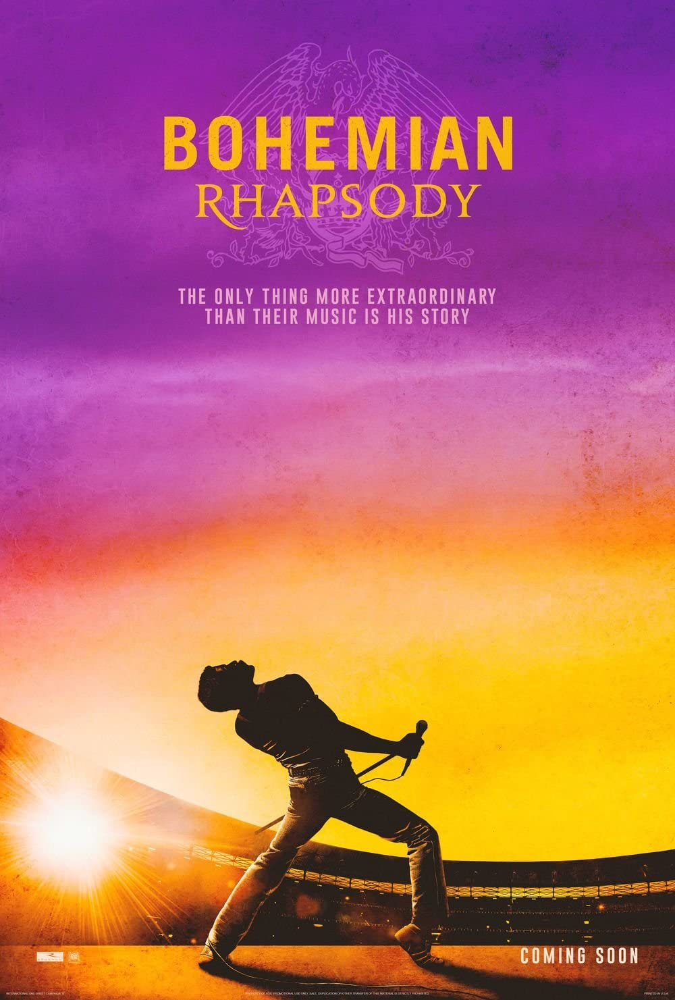
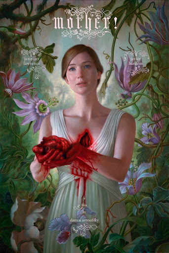
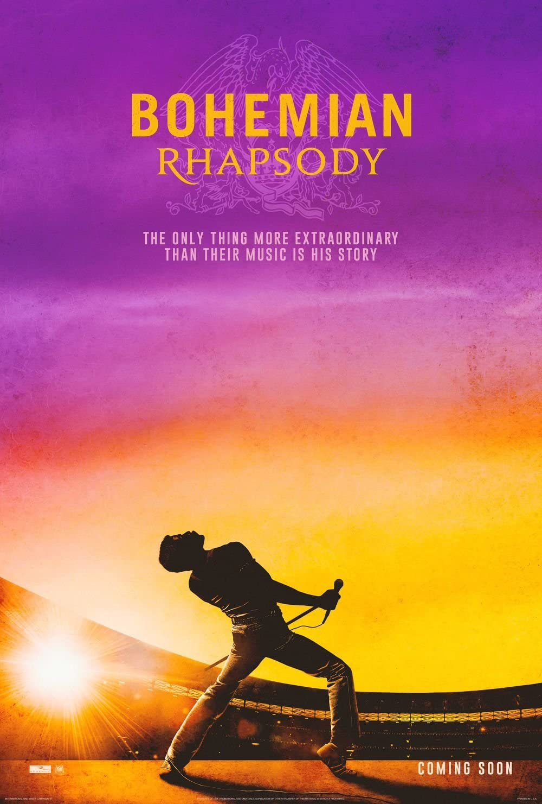

MARIKA
What would you say are your top five favorite movies?
RACHEL


My top films would have to be "One Day", "The Proposal", "A Quiet Place", "Mother!", and "Bohemian Rhapsody."
 



What would you say are your top five favorite movies?
My top films would have to be "One Day", "The Proposal", "A Quiet Place", "Mother!", and "Bohemian Rhapsody."


Why are these your favorite movies? What interests you? (the plot, acting, cinematography, color palette, etc)
The color palette and the soundtrack in One Day make the film more emotional, and you can really feel the characters’ pain through the acting even though you may not share the same experiences as them. The film takes place in France, England, and Scotland and the scenery there always makes me feel inspired and free-spirited. For The Proposal, I love how witty and humorous the characters are. I think Ryan Reynolds and Sandra Bullock play their roles very well and successfully show the relationship between the characters. I expected to come out of the theater frightened by watching A Quiet Place, but I ended up crying because the movie actually turned out to be John Krasinki’s love story for his children. This movie had its graphic scenes, but it was emotional because it showed the love and sacrifices a parent would make for his/her children. Mother! was one of the most intense, thought-provoking films I had ever seen. I was intrigued by the cinematography and the color palette of the films. This movie made references to the Bible as well as climate change, and it was interesting to make those connections after watching the movie and reading about the underlying meanings of the film. Rami Malek played the character of Freddie Mercury so well in Bohemian Rhapsody. I’ve been a fan of Queen, and it was great to be able to visually see the story of their upbringing as well as the personal conflicts that Freddie Mercury had gone through. I think this film created a more intimate and personal connection with the members of Queen and their fans. I was able to see the personalities of each member because of this film."
Do these movies have anything in common?
These movies are all pretty different in terms of genre, but they all have at least one dramatic scene. One thing they do have in common is that they all have a message that has personally impacted me, emotionally or mentally.
Do any of them relate to your life or you as a designer/creator?
I’ve never had the same experiences as the characters did in these films, but I can emotionally relate to some characters because of the mindset or thoughts that they have. In A Quiet Place, the father sacrifices himself to protect his kids, and that scene made me emotional because it had me thinking about the sacrifices I would make for my little sister. My sister and I have a large age gap, so she sometimes feels like she’s even my own. I felt that I could relate to the father in that scene because he would do anything to protect his family even if it meant that he would have to put himself in danger. There was a line in One Day that resonated with me where one character had said that she loves her friend, but she just doesn’t like him anymore. It changed my perspective on what love really is, and it has made me relate to that line more than ever when I differentiate between love and like.
How would you summarize each movie in a short sentence?
One Day makes you realize how precious the people you love are and to take advantage of each day that you have with each other. The Proposal is a comedy, but it teaches you to take the time to know a person’s story and background before making any assumptions or judgments about them. A Quiet Place is a horror/thriller, but it is a parent’s love story for their children. It shows a parent’s sacrifices and their devotion to keep their children protected. Mother! is graphic, but it can be seen as a reference to the Bible as well as to climate change on how humanity’s role in environmental destruction. Bohemian Rhapsody is about Queen’s upbringing and the personal conflicts that Freddie Mercury had faced throughout his life.
Design-wise, which movie out of your favorites has the best poster, in your opinion, and why?
It would probably have to be Mother! because it’s different from typical movie posters where everything is photographed. I think this movie poster was digitally painted. It captures an emotional scene from the movie that references how Mother Nature has always provided for humans even though we continue to leave Mother Nature in terrible condition.
Is there a movie poster or promotional design you dislike and why? (It doesn’t have to be one of your favorites that you listed)
Spider-Man: Homecoming because I just think it was too busy regarding composition. There were too many figures in one area, and I didn’t know where to look.

If you were to recreate one of these movie posters which one would it be?
Maybe One Day? I actually like the movie poster, but I guess it would have to be the least favorite of my favorite films only because I don’t like the filter of the poster. The filter seems too forced to me.
What would you change about it specifically?
I’d change the filter and make it more natural — warm-toned but more natural. The filter as it is right now is too strong in my opinion.
Besides your favorite movies, are there any movie posters you find particularly successful, and why?
I thought the movie poster for Us was particularly successful because you could just tell it would be a disturbing, horror film based on the visuals of the poster. The color palette for this movie correlated with the setting of the actual movie.